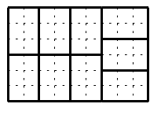

Running a paper shop is not an easy job, especially with harsh customers. Today they brought their own rectangular sheets of paper, asking you to cut it into rectangular business cards of specific size. Moreover, they require that all the paper (which may not be cheap, but is definitely not that expensive!) has to be used, i.e. no tiny bit may be left over. Moreover, the brilliant idea of cutting the sheet into very small pieces, and then gluing them together in desired sheets was laughed at.
An example of a
9×6
paper sheet divided into
2×3
cards is given below.

The input contains several test cases. The first line contains the number of test cases t
(t 105)
. Then t
test cases follow. Each of them consists of one line containing four integers a
, b
, c
, d
(1a, b, c, d109)
. Numbers a
and b
are dimensions of each business card; c
and d
are dimensions of the paper sheet.
105)
. Then t
test cases follow. Each of them consists of one line containing four integers a
, b
, c
, d
(1a, b, c, d109)
. Numbers a
and b
are dimensions of each business card; c
and d
are dimensions of the paper sheet.
For each test case output one line containing word `YES' if it is possible to divide the whole sheet into business cards, and `NO' otherwise.
4
2 3 9 6
2 3 8 6
2 3 6 8
2 3 5 7
YES
YES
YES
NO